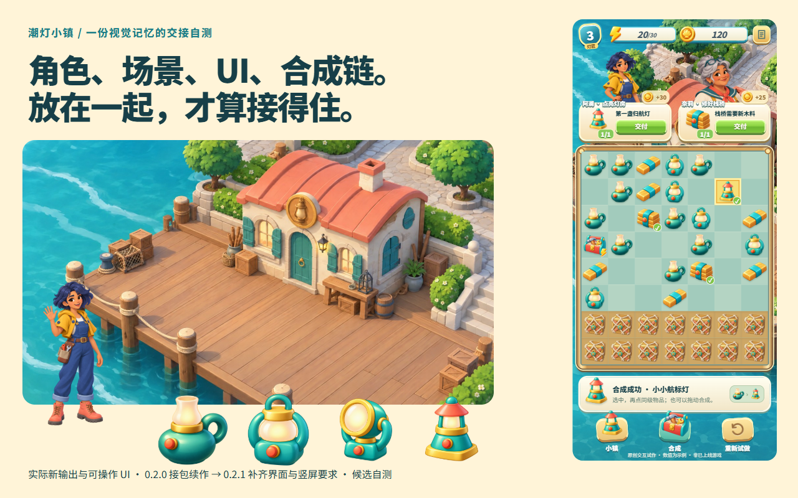

潮灯小镇：角色、场景、UI、合成链，一起交付。

第一次没有全通过。 角色和道具能接上，界面却太空，横版地图还被竖屏裁掉。补齐游戏资产、状态与裁切要求，重新组合，再操作一次合成与交付。
看完整交接与修正 ↗

ART DIRECTOR / GAME ART SKILL
把主美定下的画风、样板和细节要求一起交给团队。
角色、场景、UI 和物品，从同一份规范继续。
TIDEKEEPER / THE HANDOFF
让主美的判断跟着资料交接。
再用成员的新输出检查它是否管用。

第一次没有全通过。 角色和道具能接上，界面却太空，横版地图还被竖屏裁掉。补齐游戏资产、状态与裁切要求，重新组合，再操作一次合成与交付。
看完整交接与修正 ↗同一 Agent 在隔离目录中接包自测，原型与素材均为原创候选。真实主美、设备与引擎验收另行进行。
FROM REFERENCES TO DELIVERY
24 秒，看规范怎样带到角色、场景、UI 和合成链。
使用这次续作的真实文件与界面状态。
主美先把角色身份、场景结构、物品形状、UI 组件和交付要求整理进项目包。成员拿到同一版资料，继续制作新动作、修复状态、L3/L4 和新订单。实际组合后发现界面太空、竖屏裁切不对，于是补齐资产与规则并升版。原型里能操作合成、交付、奖励与解锁；两张订单完成后才显示修好的灯房。影片为同源界面状态演示，非游戏上线录屏；真实主美与引擎验收尚未完成。
INSTALL. THEN ASK.
支持 Agent Skills 的工具都可接入。
例如 Codex、Claude Code、Cursor。个人创作者也可以轮流承担下方两种角色。
npx skills add https://github.com/NewenergyEric/art-director-skill核心工具需要 Python 3.10+。也可以下载 Skill ZIP，交给 Agent 安装。
把现有作品、参考图、玩法与批注放进 Agent 能读取的文件夹。不必先整理完美。
使用 $art-director。这是现有作品、参考和批注。先帮我整理一版美术规范，再一步步补齐角色、场景和 UI 组件的要求，做代表样板让我确认，最后打包给团队。
你会得到 规范初稿、需要你决定的问题、样板计划，以及可分发的项目包。
先把主美分发的完整项目包交给 Agent。它包含这个项目的规范和资料。
读取这个项目包。按里面的道具规范扩展两级灯具，保持镜头、材质和光源，让升级轮廓更清楚。先给我首件，说明沿用了哪些规则，以及还有什么要检查。
你会得到 有版本、有参考的制作任务，首件与检查记录。生成和编辑使用你的 Agent 当前可用的工具。
继续说就好：对照规范检查这批结果，把要改的地方和理由列出来。
WHY ART DIRECTOR
这个项目起于和一位主美朋友的讨论。参考借鉴哪里、按钮为什么不对、新成员该从哪里开始——这些判断值得被留下。先梳理，再用样板校准，最后交成团队能接着用的项目包。
THE CONTEXT GOES WITH YOU
资料索引、项目定位、设计规范、交付验收、参考与反例，连同项目 Skill 一起走。团队不依赖主美原来的聊天记录。
以上是可运行的虚构项目草案，供你了解交付内容。
可以。Agent 先接上现有工作，保留成立的规范和样板，补足缺口。你用自然语言修改，Agent 同步手册和项目包。
它帮助整理判断、对照规则检查、解释返修依据。主美仍负责方向与发布决定，技术检查通过也不代表审美已获批准。
主美发布新版本，新任务读取新版；已开始的任务保留原版本，避免制作中途悄悄换规则。
GAME DEV SKILLS
个人创作者可以轮流承担四种角色，团队则按职责交接。从眼前的问题开始，再用实际制作的证据修正前面的判断。

↶ 样板测试、玩家反馈与实际工时，持续修正前面的决策。
工程把这些选择落到产品中，与美术和内容制作共同验证。此图说明岗位协作关系，不代表已实现自动多 Agent 编排。